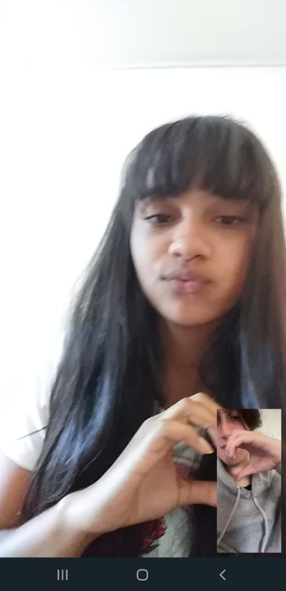
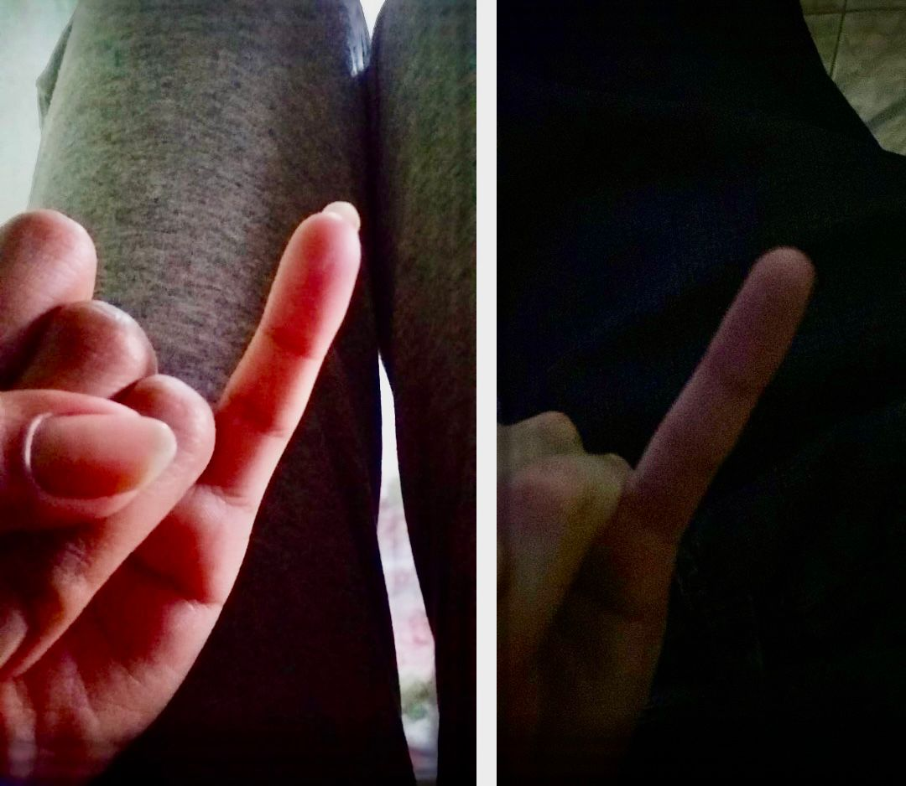

Começando com a melhor e mais bonita foto que acho do meu bebe, você é o amor da minha vida
e tudo que eu quis está em você, meu amor que vou amar independente que aconteça. Independente,
que acontecer estaremos juntos e sempre vou está com você para te apoiar be. Essa fota na vdd,
foi onde eu me apaixonei por você, e foi onde estava no seu perfil da época do facebook, me apaixonei
por este bebe e nossas conversas, não sabia como expressar mas foi umas das melhores coisas que senti.

essa aqui bê, você tirou o print da gente fazendo coração mesmo distante, estamos juntinhos bebe,
saiba que a distância para o nossos sentimentos, não há distância. Estaremos juntos be, independente
que aconteça, saiba que você sempre pode contar comigo, você é maravilhosa e uma otima namoradinha,
me sinto a pessoa mais sortuda do mundo por ter você, amo seu jeitinho a sua personalidade
que combina com você e seu charme, uma sintonia inseparável. Eu te amo muito amora, poderia escrever
muito mais aqui olhando essas fotos, mas elas já diz mto sobre a gente szzz.

Essa fotinha de juramento de dedinho, lembra amor? Coisa mais fofa meu bebe. A gente jurou, que
nunca iriamos se separar e sempre continua sendo amigos, e saiba que jamais quebraria uma promessa
de juramento de dedinho, pois eu fiz do meu fundo do meu coração be, e ele pertence a você
quero sempre manter essa nossa promessa, te mostrar que você é uma garota incrível e sempre estou
muito orgulhoso de você, do que tudo voce se tornou bebe, essa linda mulher maravlihosa que vocÊ é.
Quero ter você pra sempre bê, saiba que você será sempre minha eterna namorada que vou tratar
como minha princesinha como você sempre foi tete, amo muito você bê e feliz dia dos namoricos.
Nosso dia amo, e sem falar dos 3 anitos juntos be,